We match your drawings and requirements with the right manufacturing partner through our supply-chain management, and leverage their production strengths to deliver high-quality products — the key to consistent, superior quality.
Every part flows through equipment built for dense, uniform, repeatable carbide. We select the mill whose strengths match your drawing.
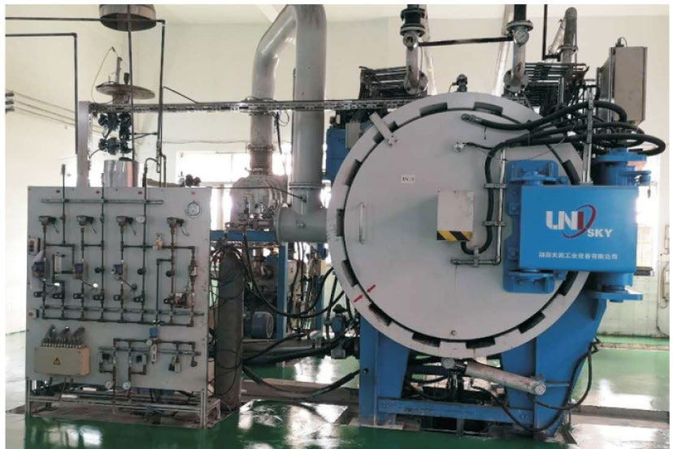
Low-pressure sintering with HIP densifies the part, eliminating residual porosity for a denser, more uniform carbide structure.
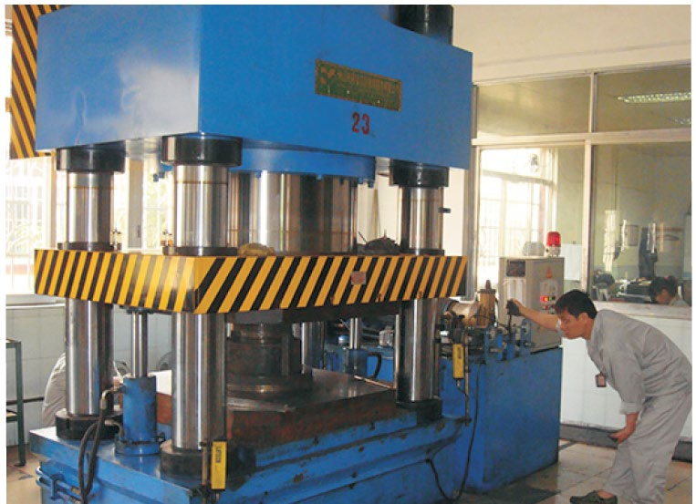
High-tonnage pressing shapes blanks with tight, repeatable tolerance and consistent green density across the part.
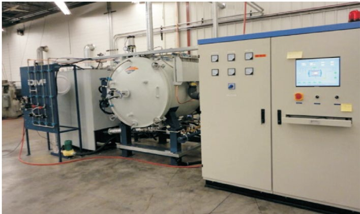
Multi-atmosphere dewaxing and sintering in one furnace removes binder cleanly and controls carbon balance for reliable hardness.
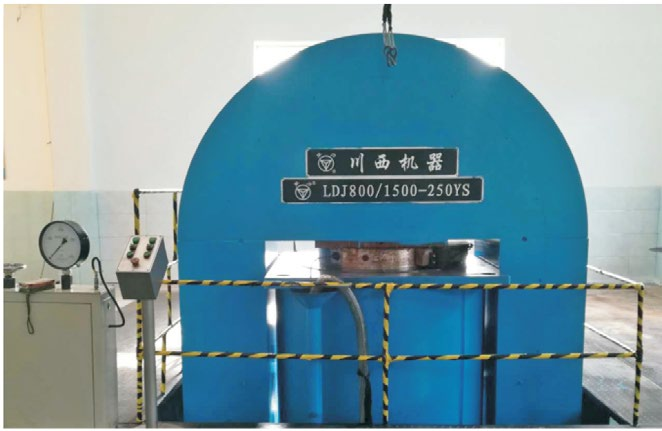
CIP delivers uniform compaction in all directions, ideal for large blanks and part geometries with even density.
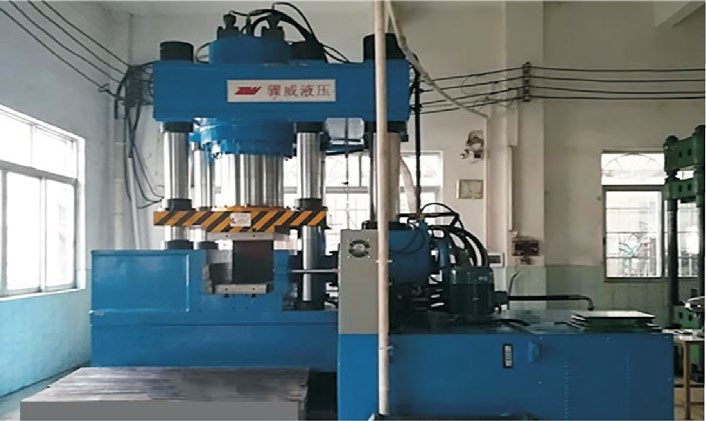
Side pressing handles complex, non-standard shapes with dimensional accuracy and low internal stress.
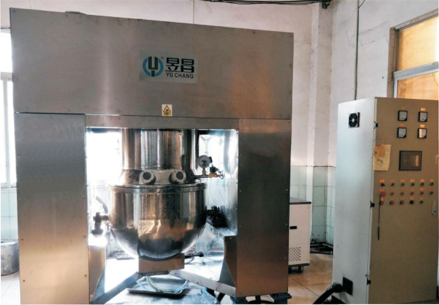
Vacuum mixing-drying homogenises powder and removes moisture, giving a stable, consistent feed for pressing.
Every product undergoes strict inspection before delivery. Each shipment is accompanied by our factory inspection report and material test report.
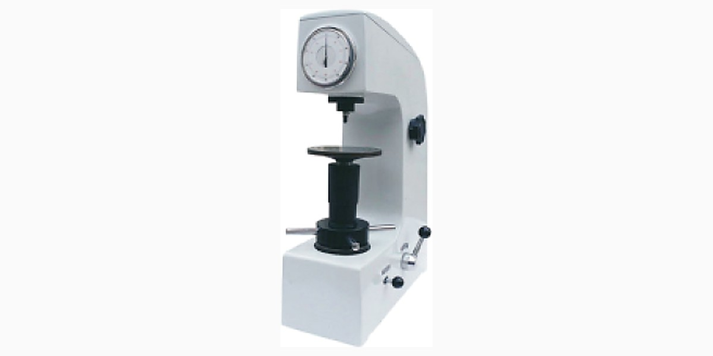
Verifies final hardness of every batch, confirming the grade meets the specified HRA value.
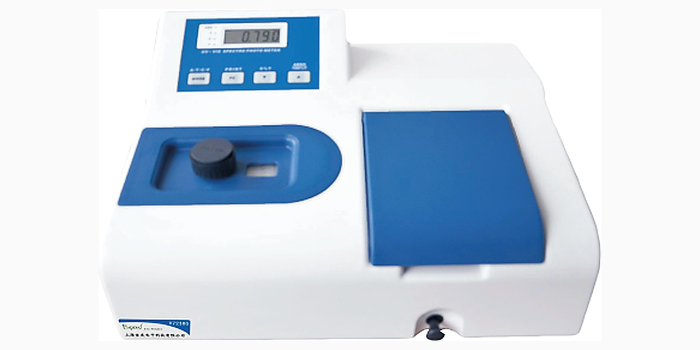
Checks chemical composition to confirm the cobalt content matches the ordered grade.
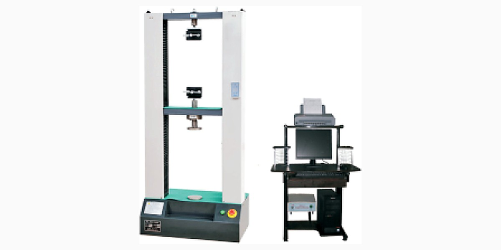
Measures transverse rupture strength (TRS) to confirm the part tolerates service loads.
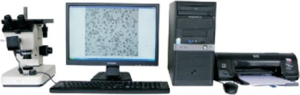
Inspects grain size and porosity to confirm a dense, uniform microstructure.
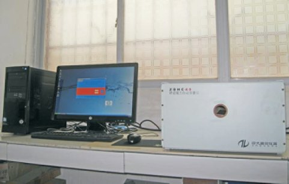
Non-destructive evaluation of microstructure — WC grain size, cobalt distribution uniformity and degree of sintering.
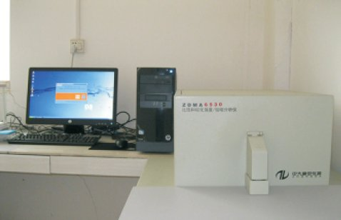
Non-destructive measurement of carbon balance and cobalt content.
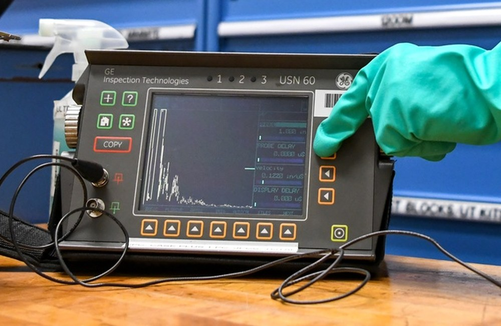
Non-destructive inspection of internal defects in finished parts.
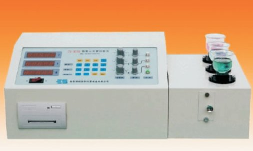
Detects trace elements to confirm the alloying composition matches the specification.
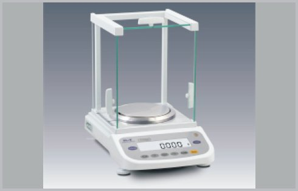
Weighs density and mass precisely, verifying dimensional and material consistency.
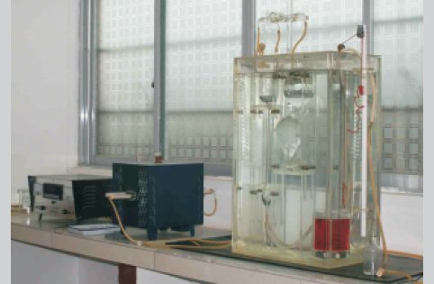
Controls total carbon to keep the phase composition within the correct two-phase region.
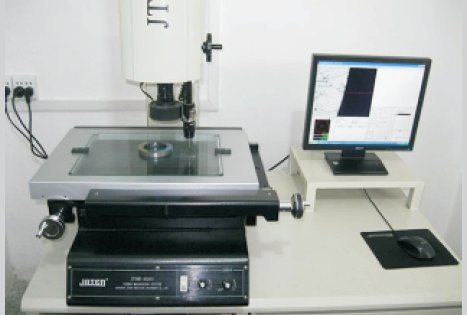
Measures complex geometry and dimension to confirm the part matches the print.
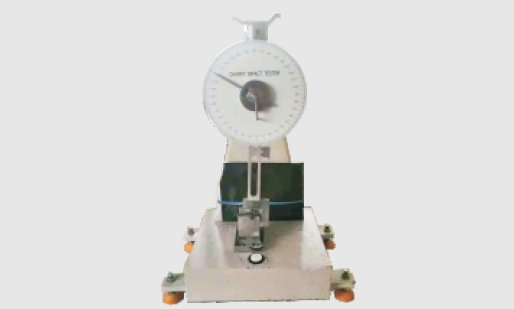
Tests impact toughness to confirm the grade suits erosive and high-pressure service.
We follow production and inspect on site, so you have visibility of every milestone — and any issue is raised and handled in time.
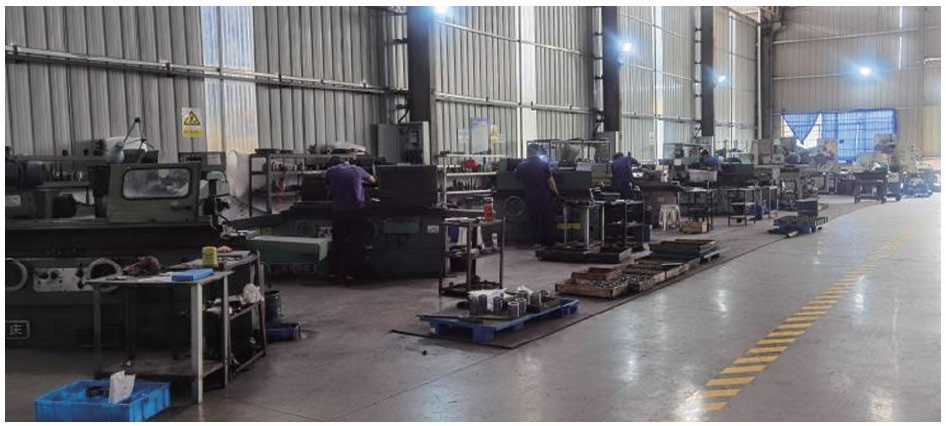
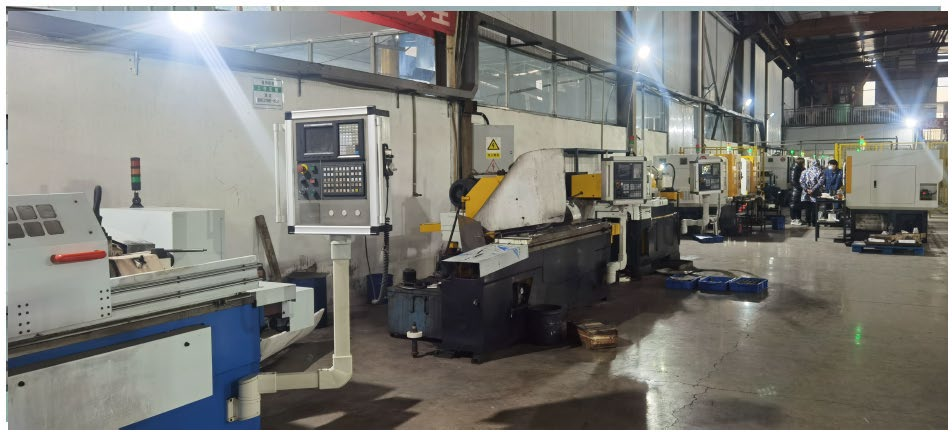
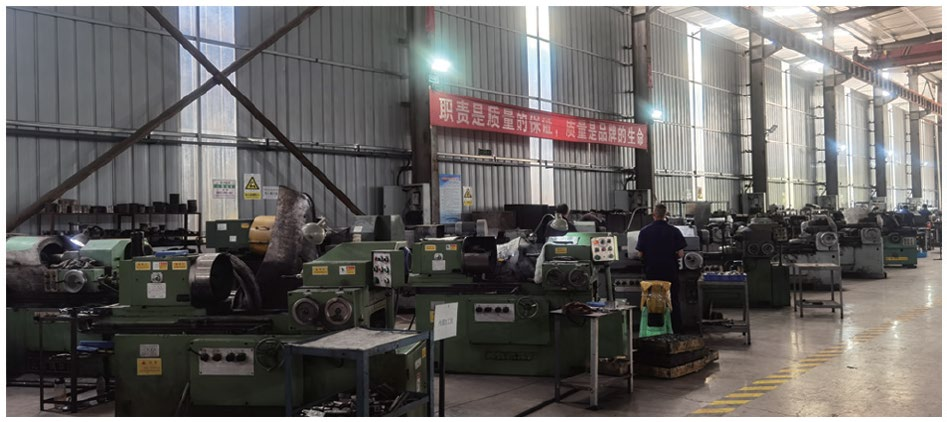
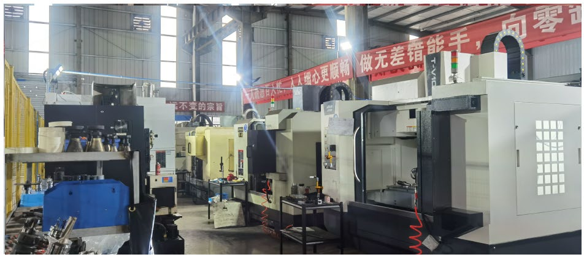
Send a drawing or a photo — we reply within 1–2 business days.